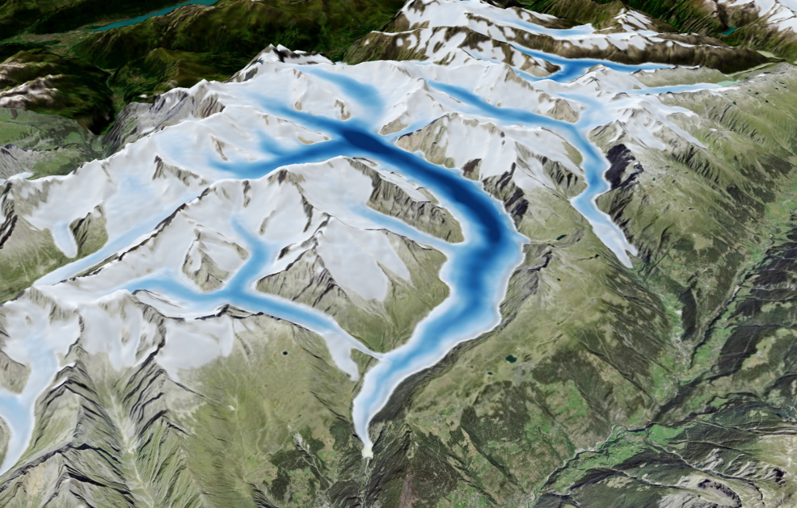
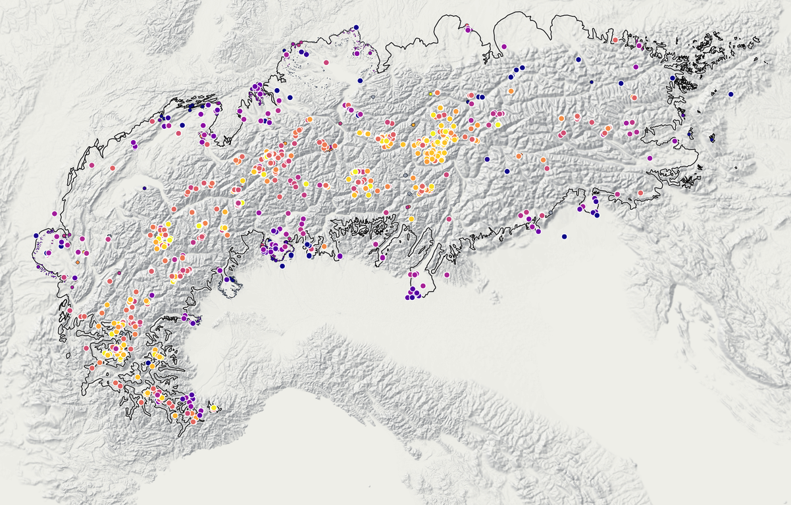

Hello, I’m
Andreas Henz.
I study glaciers, the landscapes they shape, and the stories they leave behind.

Featured project
Little Ice Age Glacier Viewer
Explore how Alpine glaciers looked during the Little Ice Age.
Open the viewer →
Featured project
AlpIce-1 Viewer
Explore thousands of dated landforms and individual ages that record how Alpine glaciers changed since the Last Glacial Maximum.
Open the viewer →